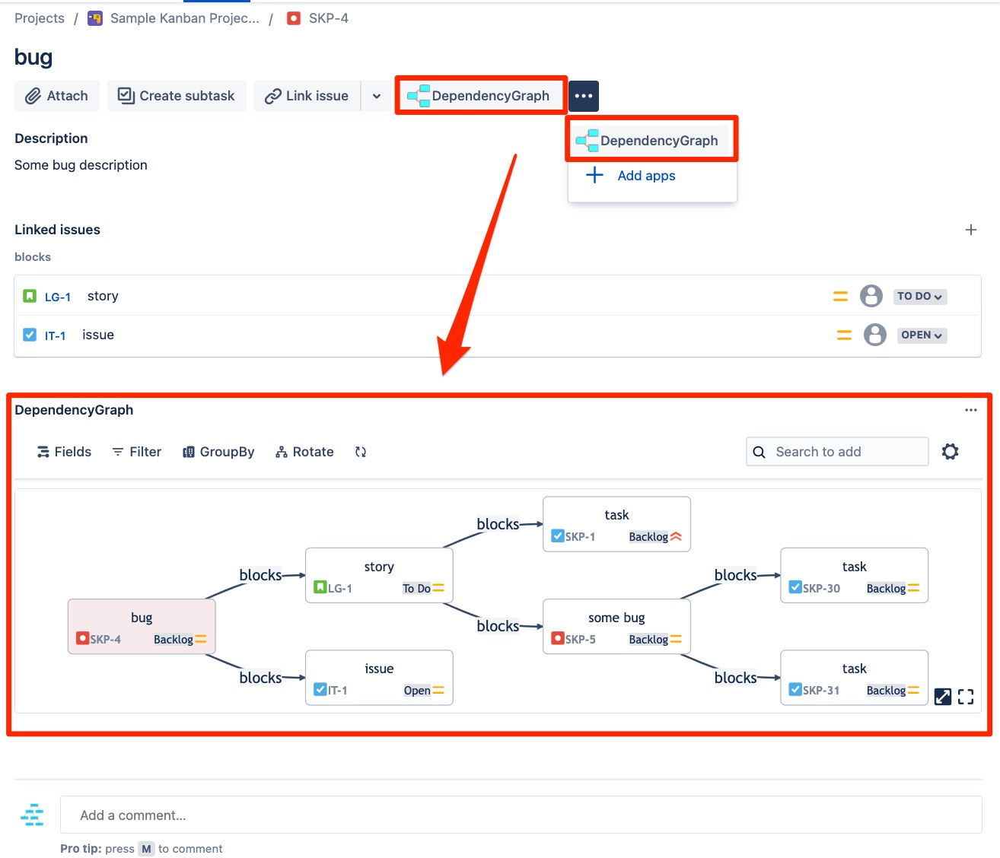
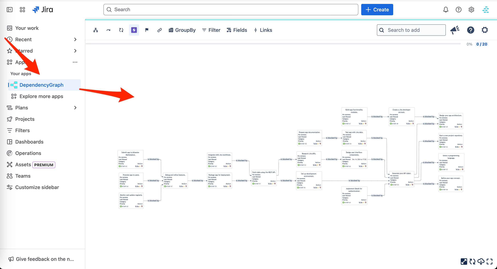
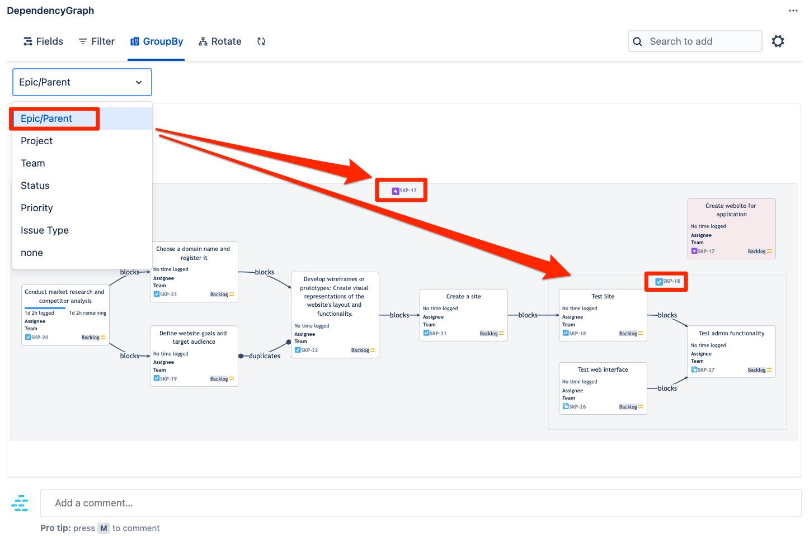
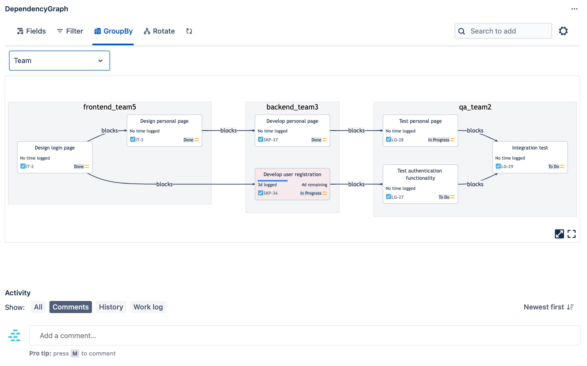
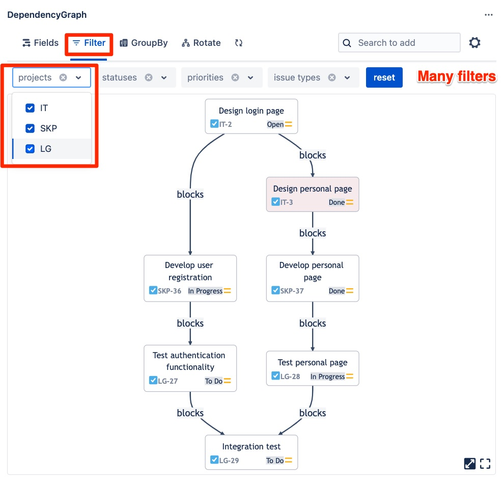
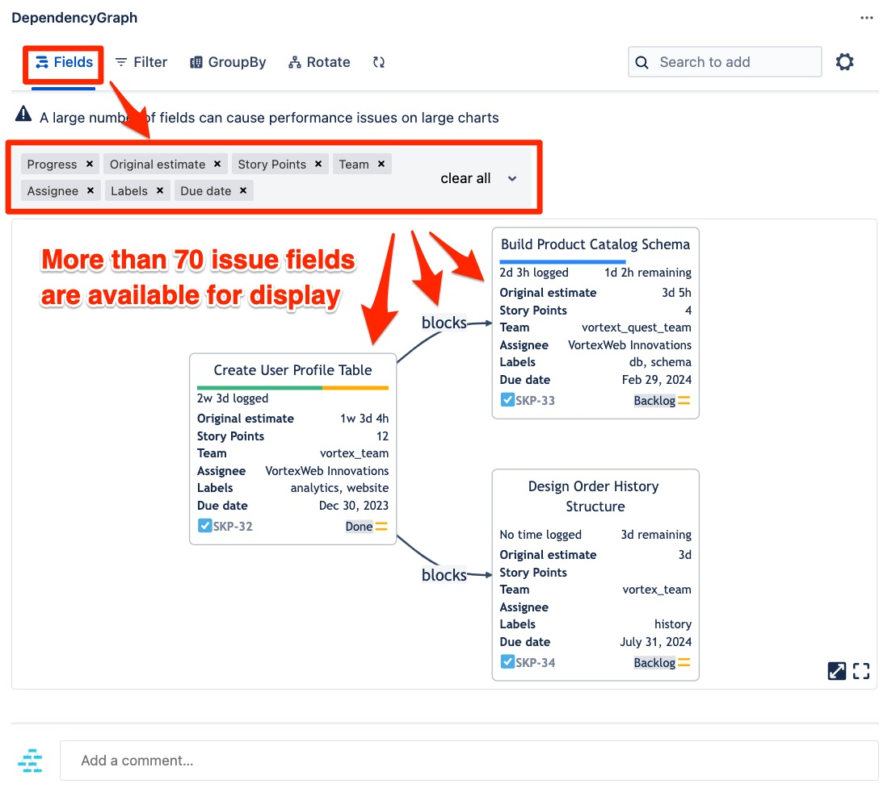
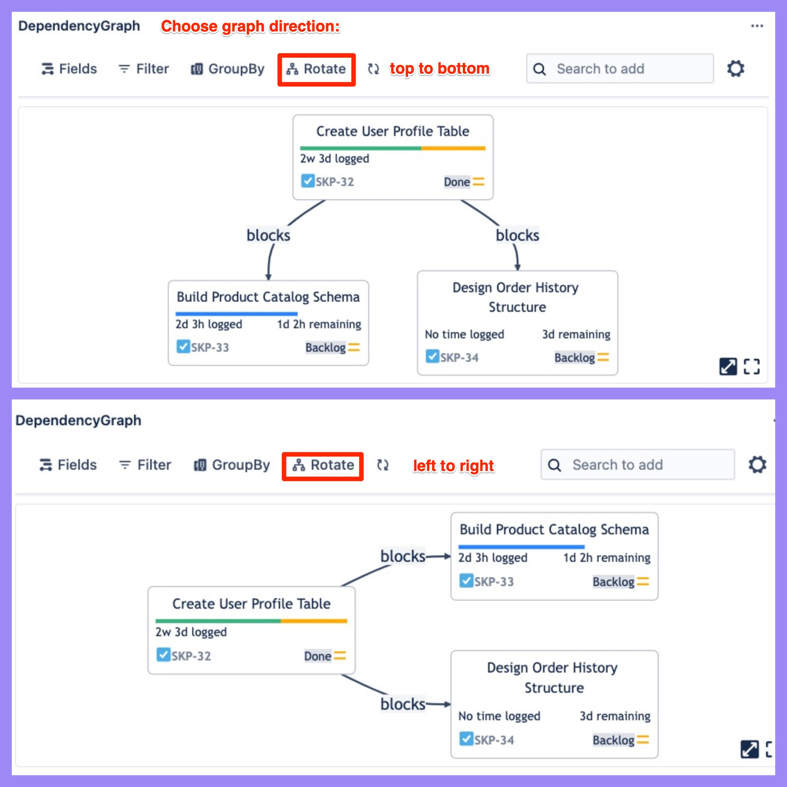
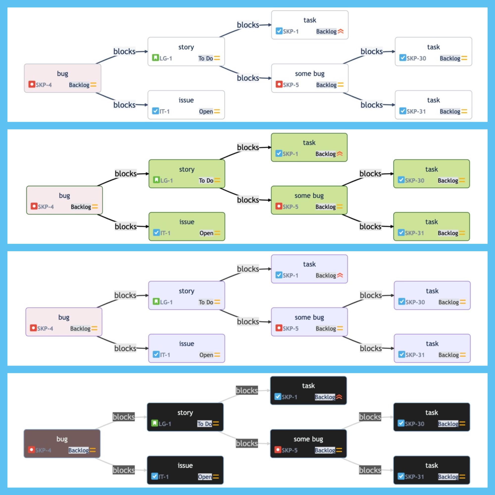

Dependency Graph: Visualize Dependency Map for Jira
Dependency Graph by VortexWeb Innovations is a Jira Cloud app to view and visualize Jira dependencies as an interactive dependency map, from blockers and linked issues to the full epic-to-subtask dependency tree. About 3,500 people use it on 185 Jira sites (October 2026).
Try it free on Atlassian Marketplace Free for up to 10 users.
Questions it answers
- What is blocking this issue? Select an issue to highlight its whole dependency path, including blockers of blockers.
- Which dependencies cross epics? The "Cross Epic connection" filter keeps only links between issues in different epics or other parents.
- Which work items can start first? Group by dependency level: unblocked work first, then the rest in execution order.
- How much work is behind a link? Show estimates, remaining estimates and story points on links.
- What does this epic contain? See the full dependency tree from epic to story to subtask, alongside all issue links.
Read more: Where to open it in Jira · Features · How to visualize dependencies in Jira
Features
Jira dependency map right inside the issue page
Click the app button to visualize all connected issues, not only direct links

Full-page dependency map from the Apps menu
A larger area to view the dependencies of many issues at once

Full epic and subtask tree
By default the graph groups issues by their epic and parent

Cross-team dependencies
Group by team to see where one team waits for another

Filter issues and links
Filter by project, status, assignee, team, sprint, fix version, label, link type, depth and more

Choose the fields to display
More than 70 fields, such as progress, due date, labels, team, time spent and estimates

Create and delete links on the graph
Click the first issue, then the second, to create a "blocks" link, or choose any custom link type. Changes save to Jira

Top to bottom or left to right
Rotate the graph with one click

Pan and zoom through many linked issues

Themes and dark mode
Pick a theme that matches your Jira

Works where you plan work
Open the dependency graph from the issue view, project page, global page, issue search, board, backlog, sprint, dashboard and Jira Service Management queue.
Start a graph from a JQL query, a saved filter, an epic, a release or a single work item. Recent searches are kept so you can return to them.
Shape the map
- 12 groupings: epic or parent, project, team, assignee, sprint, fix version, status, status category, priority, issue type, dependency level, and level by open issues.
- 18 filters: including project, status, assignee, team, sprint, fix version, label, component, link type, link depth and linked issues only.
- 70+ fields: choose what each card shows, such as progress, due date, labels, time spent and estimates.
- Links: create and delete links, including custom link types; reverse how a link type is drawn and exclude noisy link types.
- View: rotate, pan and zoom, full screen, themes including dark mode, and SVG download.
What customers say
"Very helpful app for visualizing complex issue dependencies. The interface is intuitive, it makes it much easier to understand the full hierarchy and relationships between issues."
"I find this app incredibly valuable, especially when dealing with requirements that demand traceability. The ability to seamlessly link issues directly within the graph facilitates the rapid creation of numerous connections, all from a single view."
Frequently asked questions
What is Dependency Graph for Jira?
Dependency Graph: Visualize Dependency Map for Jira is a Jira Cloud app by VortexWeb Innovations. It draws your existing issue links and the epic, story and subtask hierarchy as one interactive dependency map, so you can see blockers, cross-team dependencies and the order in which work can start.
Does it work across projects?
Yes. You can map, group and filter issues from several Jira projects on one graph.
Does it need setup?
No configuration is needed. It reads your existing Jira issue links and hierarchy.
How is it different from the Jira Plans dependencies view?
The Jira Plans dependencies view sits inside a plan and needs Jira Premium or Enterprise. Dependency Graph opens from issues, boards, backlogs, sprints, issue search and other Jira pages, and does not need a plan.
Does it support Jira Service Management?
Yes. It opens from Jira Service Management queues.
Does it support Jira Data Center?
No. It is available for Jira Cloud only.
Where is my data?
The app runs on Atlassian and sends no issue data outside Atlassian. Issues are read with each person's Jira permissions. Your view settings and search history are saved in your own Jira user account, where only you and Jira admins can read them. Details are in the privacy policy.
How much does it cost?
It is free for up to 10 users. Larger teams can start with a free trial; prices are on the Atlassian Marketplace.
How fast is support?
We aim to give the first response within 2 business days. See the support page.
Try Dependency Graph free on Atlassian Marketplace
Free for up to 10 users. Larger teams can start with a free trial.